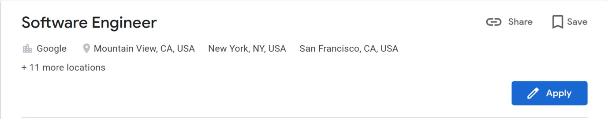

Ideal Job
Software Engineer at Google - USA
This job allows me to work on or develop new softwares and programs across a variety of fields while also earning a handsome pay. Not only that but I love to work in teams to complete tasks and projects and this job allows me to do that. But achieving this job is not easy work as its not only competitive, with google receiving million of applications every year, but also the qualifications and skills required include having 3 years or experience in software development with various programming languages such as Java, C++, and Python and those are the minimum qualifications for the job. The preferred qualifications extend to having a Master degree or PhD in computer science, having experience in developing accessible technologies and having the ability to earn numerous coding languages. As of now I lack most of these qualifications or experience or this job as I only know minimal Python and HTML, also not having completed my bachelors I don’t have any experience in the software development field. However I do posses some of the preferred qualifications of having an interest and ability to learn coding languages as needed and have the ability to write in English fluently. However as I progress through my time at RMIT I hope to achieve all the skills required for the job by completing my bachelors, completing masters or PhD in computer science and eventually developing 3 years of experience at another software company after graduating and hopefully gain an internship at the company to pursue my ideal job.